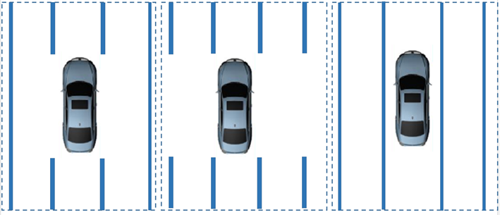
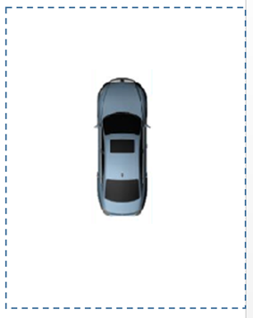
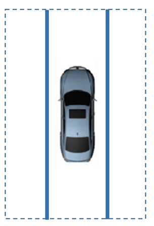
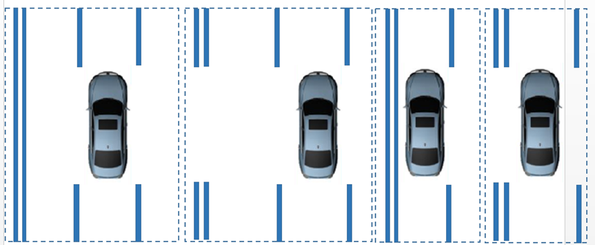
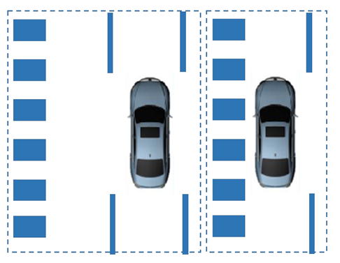

Ситуации, в которых требуется калибровка :
1. Замена и демонтаж короткофокусной камеры переднего обзора;
2. Замена и демонтаж ветрового стекла;
3. Замена узла контроллера домена интеллектуального вождения.
Инструменты: диагностический прибор
Требования к калибровке:
1. Требования к участку;
Рекомендации:
Сценарий с тремя полосами движения, полосы одинаковой ширины, полоса движения вашего автомобиля и соседние полосы имеют прерывистую или сплошную длинную разметку; движение по центральной полосе для обеспечения видимости двух линий разметки с левой и правой сторон.

Сценарии, которых следует избегать:
① Отсутствие разметки полосы движения

② Одиночная линия разметки

③ Появление двойной линии на соседней полосе и полосе вашего движения

④ Появление линии слияния на соседней полосе и полосе вашего движения

2. Требования к дороге;
① Прямой участок, пологий склон, отсутствие заметных неровностей (продольный уклон дорожного полотна [угол pitch] в пределах < 1°), отсутствие поперечного уклона (уклон дорожного полотна в поперечном направлении [угол roll] в пределах ±0.2°);
② Прямой участок дороги протяженностью не менее 1 km (с возможностью разворота на обоих концах);
③ Требуется городской дорожный сценарий, избегать загруженных дорог;
3. Требования к погоде:
Дневное время, достаточная освещенность, отсутствие прямых солнечных лучей на объектив камеры, избегать дождя, снега, густого тумана и дымки.
4. Требования к разметке полосы движения:
Сплошная или прерывистая линия, четко видимая, без повреждений и размытости.
5. Требования к скорости:
Поддержание скорости автомобиля в диапазоне 40-60km/h, равномерное движение по прямой.
6. Требования ко времени:
① Запускать послепродажную калибровку только после выезда на дорогу, соответствующую сценарию послепродажной калибровки;
② Выполнять нормальное движение в соответствии с вышеуказанными требованиями до тех пор, пока диагностический прибор не отобразит сообщение об успешном завершении калибровки, расчетное время выполнения составляет в пределах 15 min.